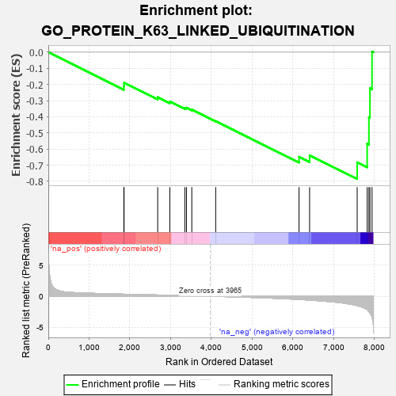
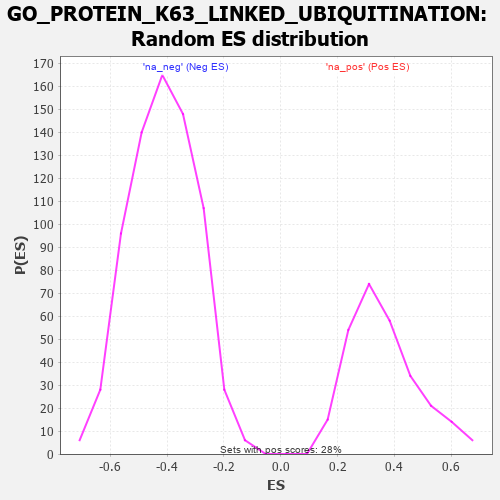

| | | Dataset | 7d |
| Phenotype | NoPhenotypeAvailable |
| Upregulated in class | na_neg |
| GeneSet | GO_PROTEIN_K63_LINKED_UBIQUITINATION |
| Enrichment Score (ES) | -0.78532124 |
| Normalized Enrichment Score (NES) | -1.8910019 |
| Nominal p-value | 0.0 |
| FDR q-value | 0.0073340135 |
| FWER p-Value | 0.091 |
Table: GSEA Results Summary

Fig 1: Enrichment plot: GO_PROTEIN_K63_LINKED_UBIQUITINATION
Profile of the Running ES Score & Positions of GeneSet Members on the Rank Ordered List
| PROBE | GENE SYMBOL | GENE_TITLE | RANK IN GENE LIST | RANK METRIC SCORE | RUNNING ES | CORE ENRICHMENT | | 1 | TRIM5 | | | 1852 | 0.327 | -0.2105 | No |
| 2 | OTUB1 | | | 1857 | 0.326 | -0.1889 | No |
| 3 | SASH1 | | | 2682 | 0.201 | -0.2788 | No |
| 4 | UBE2S | | | 2980 | 0.153 | -0.3058 | No |
| 5 | UBE2O | | | 3348 | 0.097 | -0.3453 | No |
| 6 | DDX3X | | | 3388 | 0.091 | -0.3440 | No |
| 7 | UBR5 | | | 3518 | 0.074 | -0.3552 | No |
| 8 | TRAF1 | | | 4104 | -0.024 | -0.4271 | No |
| 9 | RNF8 | | | 6147 | -0.518 | -0.6485 | No |
| 10 | UBE2N | | | 6407 | -0.621 | -0.6389 | No |
| 11 | TRAF4 | | | 7573 | -1.514 | -0.6825 | Yes |
| 12 | TRAF6 | | | 7818 | -2.157 | -0.5668 | Yes |
| 13 | TRAF2 | | | 7861 | -2.481 | -0.4036 | Yes |
| 14 | TRAF3 | | | 7886 | -2.695 | -0.2236 | Yes |
| 15 | TRAF5 | | | 7938 | -3.448 | 0.0041 | Yes |
Table: GSEA details [plain text format]

Fig 2: GO_PROTEIN_K63_LINKED_UBIQUITINATION: Random ES distribution
Gene set null distribution of ES for GO_PROTEIN_K63_LINKED_UBIQUITINATION